JOSH SHERREITT / MECHANICAL ENGINEERING
Mechanical Engineer, Waterman and Outdoor Enthusiast
TCB: Take care of business.
Get it done.
I'm a mechanical engineer working on one-way attack UAS at Empirical Systems Aerospace. My scope runs from mechanical propulsion integration to control surfaces, wing deployment mechanisms, and composite structures. I like problems that start with an idea, a sketch, or a thought, but the part still has to fly.
Before this I designed pump and piping systems at Wallace Group Engineering, and before that I was chasing adventurous outlets to pay the bills: ocean lifeguard, speargun manufacturing technician, rock climbing gym employee. Each one taught me something about working under pressure and getting things right the first time. I also learned how to communicate. Technical ownership and explanation is nothing if you can't communicate it.
I grew up in Southern California, surfing, diving, building gas-powered scooters, and working at a local golf cart repair shop, which is probably why I gravitate toward building things that have to perform in the real world and not just on a screen. Cal Poly's learn-by-doing approach suited me. I put in over 200 hours in the machine shops on projects that had nothing to do with a grade.
I care about design for manufacturability. A part that's brilliant in CAD and impossible to build isn't a good design. Spinning a part in CAD forever when it's not the right design for the application is time wasted.
Associate Mechanical Engineer
Lumberjack Program
Classified Program
Associate Mechanical Engineer (Jul 2025–Jan 2026) / Mechanical Engineering Intern (Jul 2024–Jul 2025)
| CAD | SolidWorks, AutoCAD |
| PDM | SolidWorks PDM |
| CNC | MasterCAM, HSMWorks |
| Coding | MATLAB, Python, G-code |
| Drafting | GD&T per ASME Y14.5, engineering drawing creation and revision control |
| Approach | Design for Manufacturability (DFM), execution-first under tight timelines, direct coordination with machinists and technicians to close the design-to-build gap |
| Office | Word, Excel, Outlook |
B.S. Mechanical Engineering, '25
Manufacturing Concentration
Personal project, design through machining
A lever-actuated espresso tamper I designed and built from scratch. Pulling the handle drives a toggle linkage that converts the angled pull into a straight, repeatable press on the portafilter, no wrist torque needed. Fully modeled in SolidWorks, hand-calculated for pivot loads, then machined out of 6061 aluminum on a manual mill and bandsaw.
Design
I started with a free body diagram to size the linkage before committing to a shape in CAD. Working through the reaction forces at each pivot told me how much material I actually needed at the joints, instead of guessing and overbuilding. From there I modeled the full assembly in SolidWorks: a two-bar toggle that takes the angled force from the handle and drives the tamp straight down onto the portafilter, mounted to a wood upright.
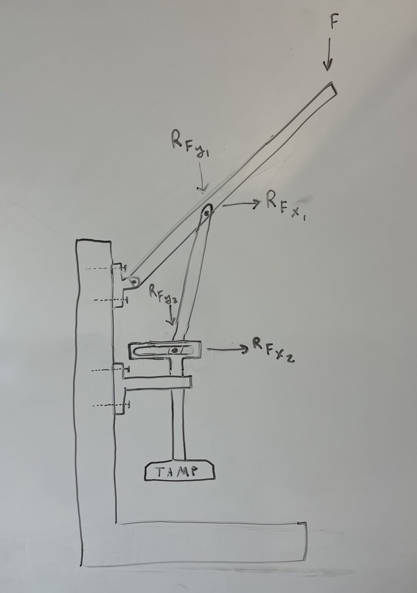
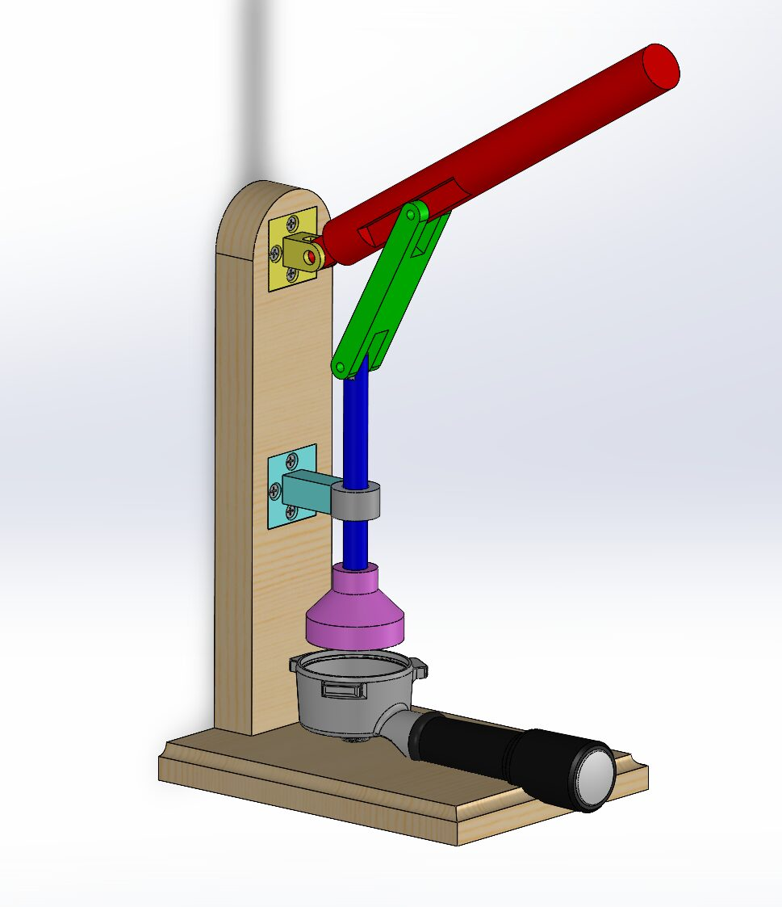
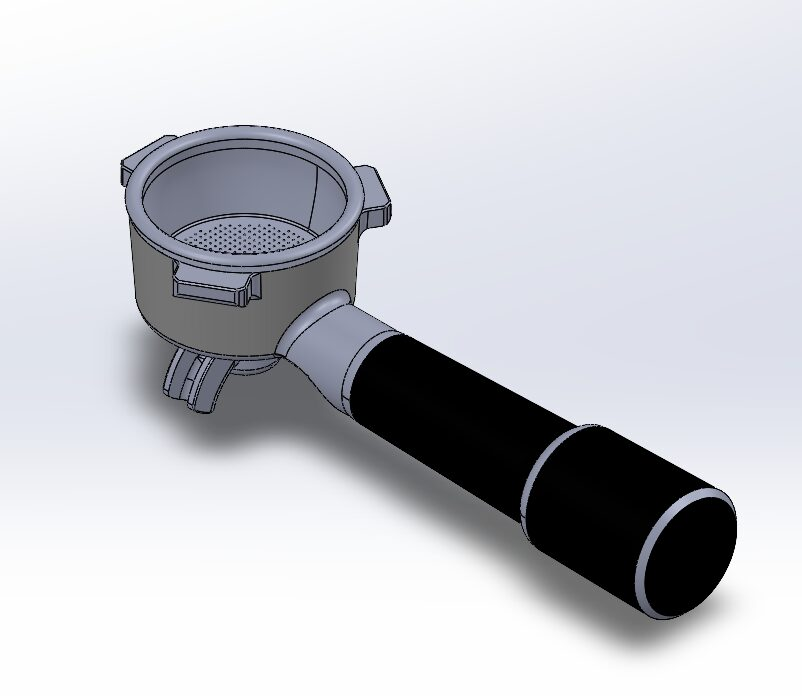
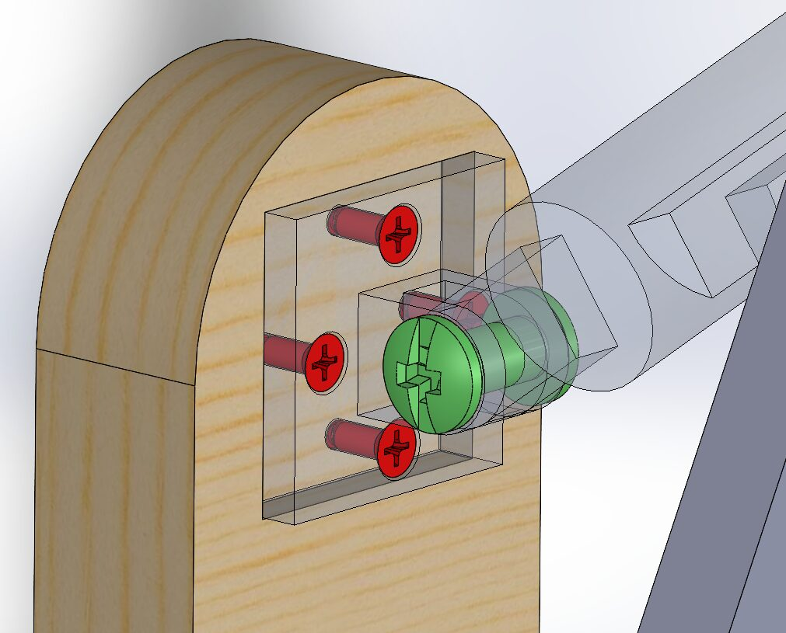
Machining
Every metal part started as bar stock. I cut blanks on the bandsaw, then moved to the manual mill to machine the pivot bosses, the yoke, and the tamp head. The decorative engraving on the tamp face was CAM-programmed in HSMWorks as a scallop toolpath before cutting. Machining it myself meant designing parts I could actually hold in a vise and cut with the tools on hand, not just what looked good in CAD.
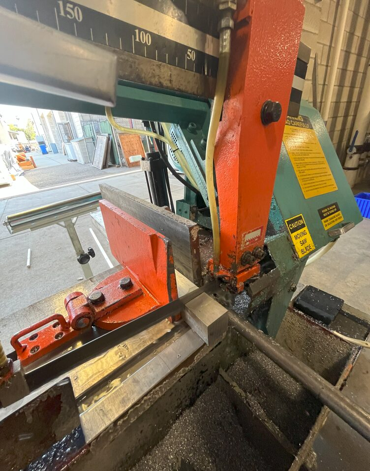
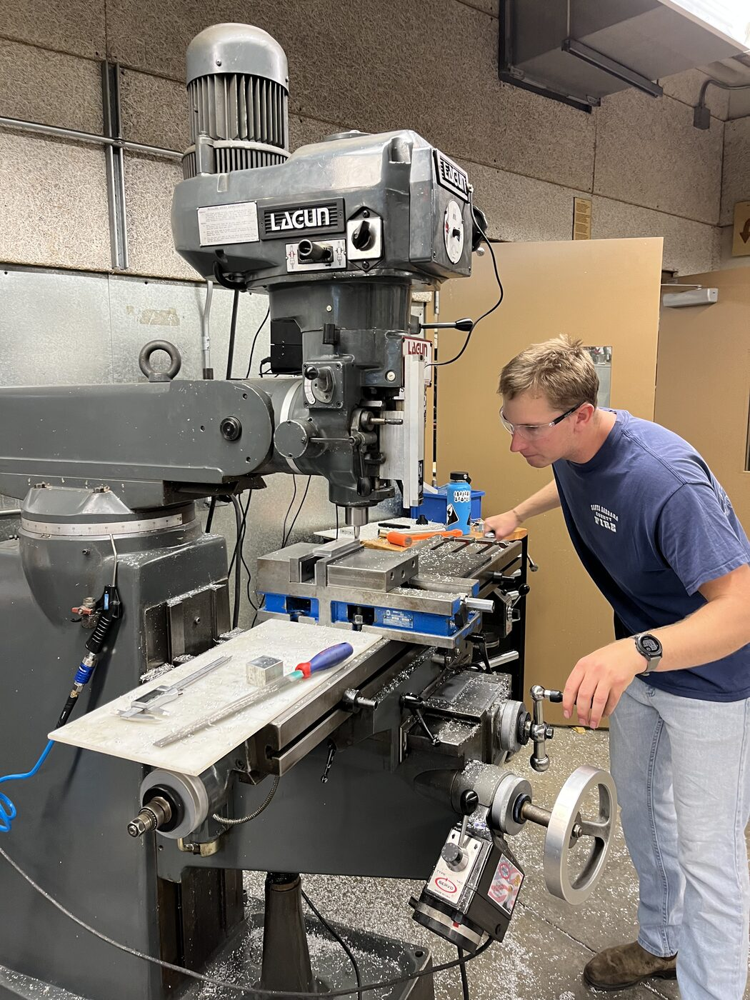
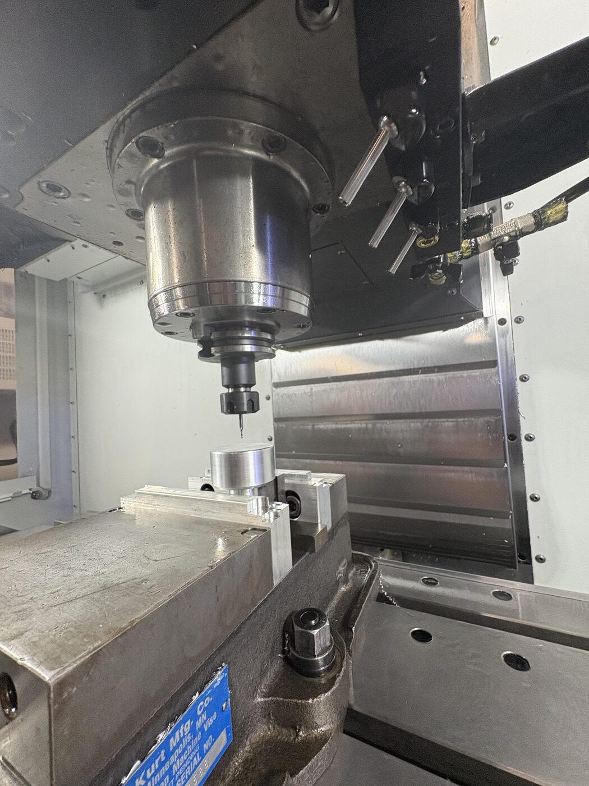
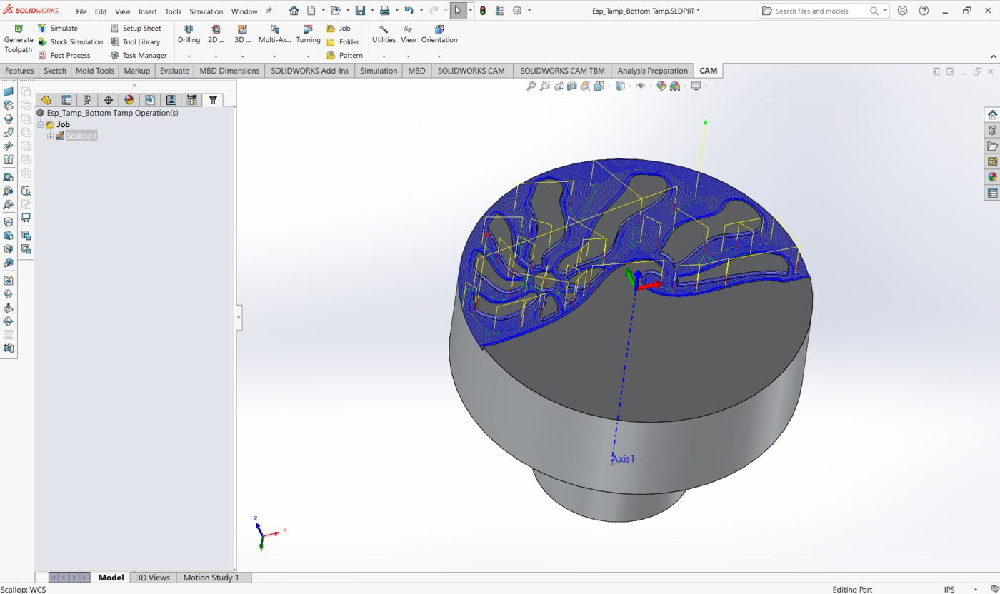
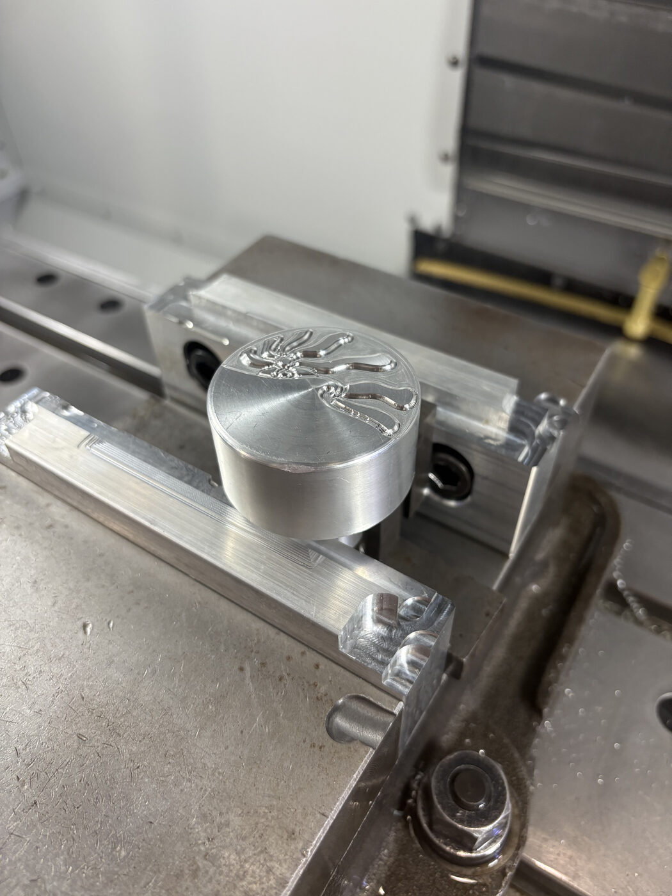
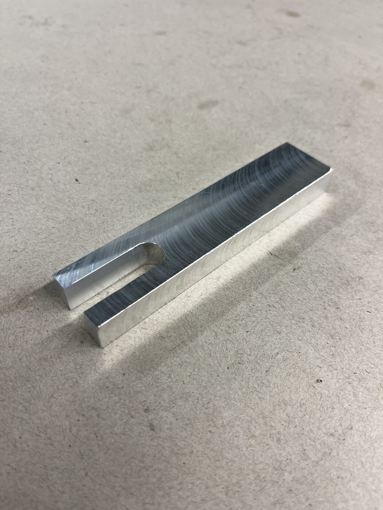
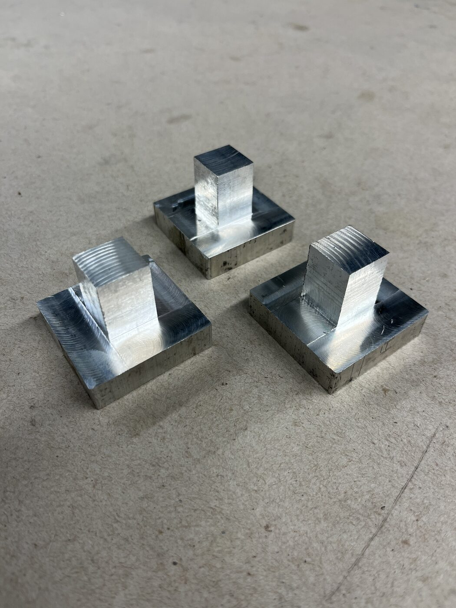
Final Build
The finished tamper mounts to a hardwood upright with a laser-engraved logo and holds a standard portafilter under the tamp head. Pulling the handle drives the linkage through its toggle point and presses straight down onto the grounds.
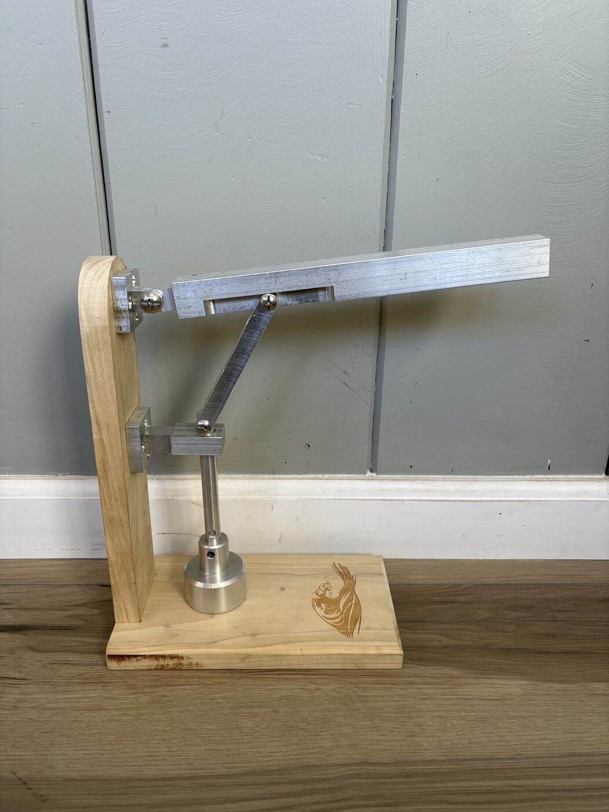
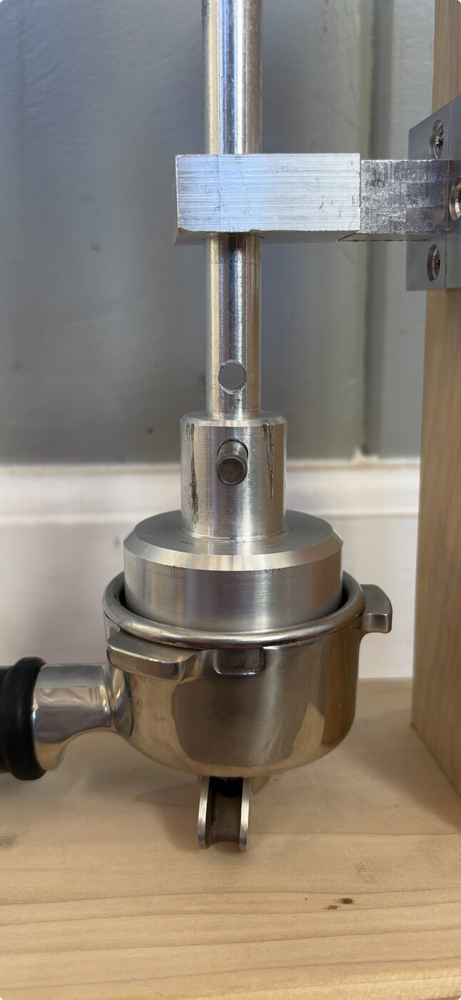
Open to hearing about roles in drone, defense, and DFM-focused engineering. Reach out directly or find me on LinkedIn.